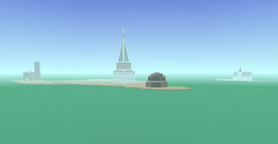

|
Travels of Mariko Horo, The |

|

|

|
|
Pacific Rim artworks
|
|
Jan 01, 2006 at 04:42 PM |
|
 Sometime between the 12th and the 22nd centuries Mariko Hōrō, Mariko the Wanderer, journeys westward from Japan in search of the Buddhist Paradise floating in the Western Seas. She does find Paradise, but finds also a chilling, darker side to the West, an island where lost souls are held in an eternal Limbo. She encapsulates her impressions of the places she visits in a series of 3D virtual worlds and invites you to see the West through her eyes. Supported by a Japan Foundation Fellowship at the Kyoto Art Center, and a Fellowship at the Center for Advanced Visual Studies, MIT.
The Travels of Mariko Hōrō is an interactive 3D virtual reality installation. The image is generated in real time on a fast gaming PC and projected on a large 9’x12’ screen to produce an immersive experience. Users move their viewpoint through the virtual environment with a joystick or similar navigational input device. Mariko is a fictitious character I have invented to incorporate the viewpoint for this project - users will never actuall see Mariko, except perhaps in a mirror. In essence they will be Mariko, seeing the exotic and mysterious Occident through her eyes and her experiences. The virtual environment is sensitive to their presence, changing around them as a result of their movements and actions: An empty church fills with saints who vanish into the heavens. A basilica transports the user directly into the Western Cosmos, where angels sing the praises of the Goddess of Compassion. A pavilion takes users deep into the underwater realm of the Heavenly King. A plain wooden chapel leads into a Limbo of constant torment.
Music for Mariko Hōrō is embedded in the piece itself, localized to specific places within the 3D worlds. The composer Ping Jin, Professor of Music at SUNY/New Paltz, studied music both in his native China and in the USA. Ping describes the music as “creating a sonic dimension for Mariko's meditation on the mythic West. Created from both sampled and computer generated sounds, there are fusions and juxtapositions of Eastern and Western sounds to enhance the scene and mood of each section.”
The Travels of Mariko Hōrō is planned as a series of journeys, with each journey a complete work in itself. Completion of the First Journey: In Search of the Western Paradise will be in late 2005. URLs:
Project website
http://mission.base.com/tamiko/mariko-horo/
Online Portfolio
http://mission.base.com/tamiko/
|
|
Last Updated ( Apr 12, 2006 at 01:34 PM )
|